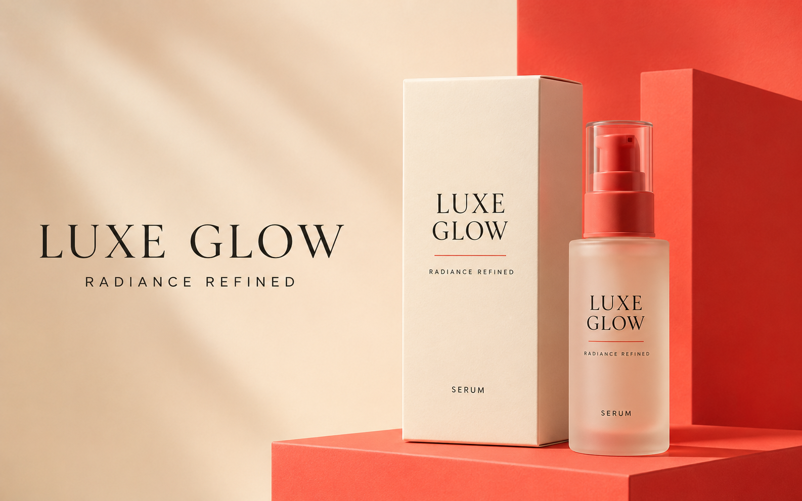

01
Brand Identity · Packaging
Luxe Glow
A refined beauty identity designed to feel premium, gentle, and approachable. The system combines editorial typography with warm coral and cream tones for a softer luxury feel.
- Brand strategy and visual direction
- Typography and colour system
- Packaging and campaign applications